What is Income?
ECON 499: Economics of Inquality
Winter 2018
Armour et al (2014)
- "Levels and Trends in U.S. Income and its Distribution: A Crosswalk from Market Income towards a Comprehensive Haig-Simons Income Approach"
- How do different definitions of income change our measured inequality?
Haig-Simons income
- Income is the amount of consumption plus the change in net worth
- Emphasizes consumption over market income
- A better representation of welfare
Data
- Census Bureau's Current Population Survey, March supplement (March CPS)
- Survey data, asks respondents about all sources of income (minus capital gains)
- Health insurance status asked, and source of health insurance
- Health insurance premiums not captured, and are calculated by the Census Bureau
- Incomes are "top-coded", need to be estimated
- Capital gains, tax credits and liabilities predicted using a model
The crosswalk
- Describe income in 4 ways:
- Market income (Piketty and Saez)
- Add transfer payments (disability, unemployment, social security, etc)
- Weight household size, add in kind transfers, add taxes
- Add realized capital gains
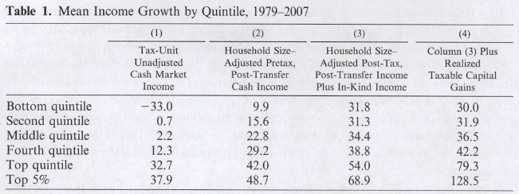

Capital gains
- "Realized" capital gains are only observed when assets are sold
- Changes in wealth depend on the capital gains that are not "realized"
- If your portfolio goes up and you don't sell, your "income" has increased (at least in present value)
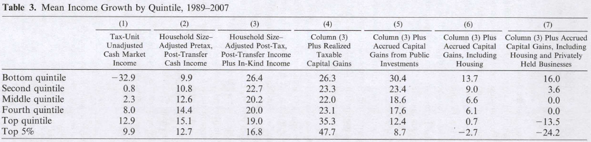
Why is the difference so dramatic?
- In 2007, compared to 1989, lower income people owned more:
- Equity
- Housing (!)
- Businesses
Housing since 2007
- Housing a primary source of capital "income"
- The 2007 recession resulted in a sharp decrease in housing
- This decrease was more severe among low-income home owners
- Housing shocks constrain ability to get credit, build wealth
Wolff (2014)
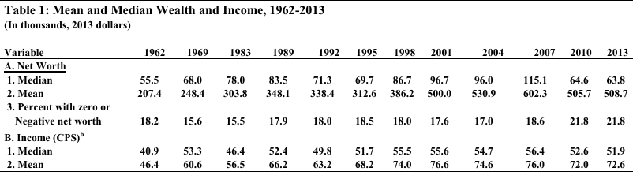
Wolff (2014)
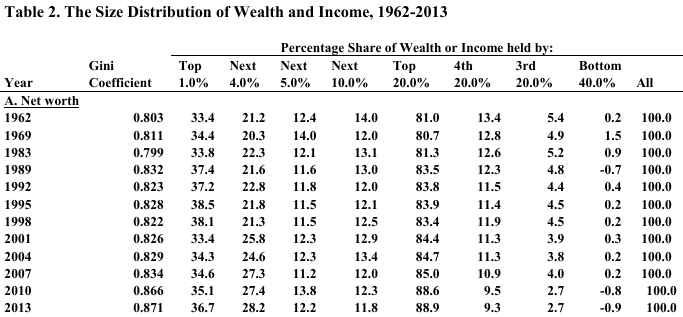
Wolff (2014)
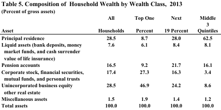
Wolff (2014)
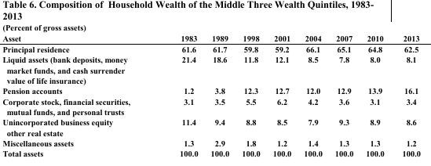
Mian, Rao, Sufi (2013)

Mian, Rao, Sufi (2013)
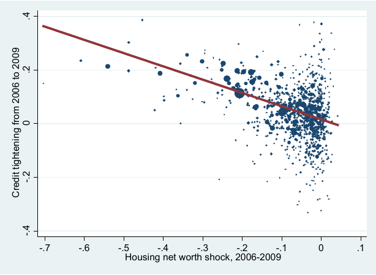
Implications of financial crisis
- Lowest 50% have most of their wealth stored in their homes
- Recession of 2007-2009 decreased the value of home considerably, decreasing wealth and capital "income" (unrealized capital gains)
- Housing shocks were concentrated among lower income groups
- Capital incomes of lowest 50% decreased much more than top percentiles
- Credit constraints were tightened more for lower-income homeowners as a result of the shock
Consumption
- How do we track inequality across time?
- Dollar in 1970 buys much less than a dollar today
- How do we account for new, cheaper technology, inflation, etc?
- Imagine life at the 10th percentile in 1980 vs 10th percentile today. Can it be true that this person is no better off?
Example
Consumer Price Index
- CPI is used to compare income across time
- Weighted average of prices in a "basket" of representative goods
- Tends to overstate inflation, does not account for substitution and improvement very well
Alternative inflation measures
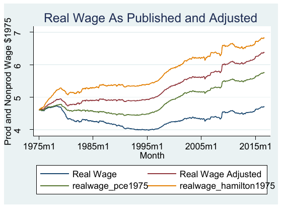
Which income is "right"?
- Defining an individual's income is difficult, easy to get the results you want
- An alternative: Think of income in terms of macro:
\[Y = C + I + G + NX\]
- Less controversy on how to measure
- Can we describe inquality in a way that is consistent with national income?
- Piketty, Saez, Zucman (2016)
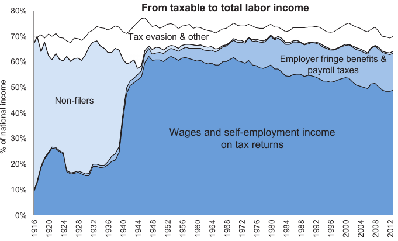
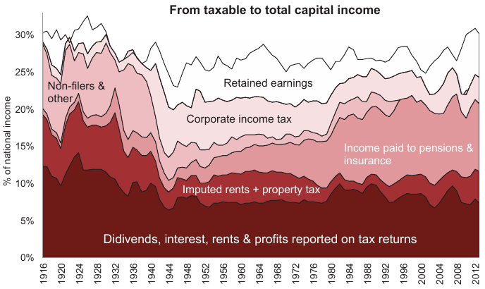
Pre-tax income
Pre-tax national income…is our benchmark concept to study the distribution of income before government intervention. Pre-tax income is equal to the sum of all income flows going to labor and capital, after taking into account the operation of private and public pensions, as well as disability and unemployment insurance, but before taking into account other taxes and transfers…we deduct the contributions to private and public pensions including Social Security—old age, survivors and disability—and unemployment insurance from incomes, and add back the corresponding benefits.
Distribution of total income
- Combine surveys, tax data, models, other empirical results, assumptions to distribute total pre-tax income to different percentiles
- Each step is carefully considered and explained
- Expect criticism here in the future!
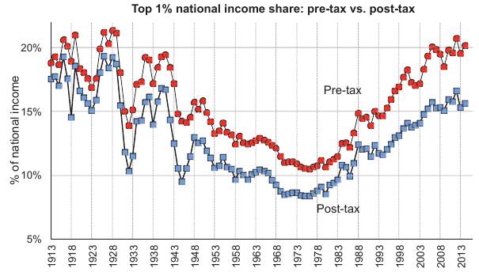
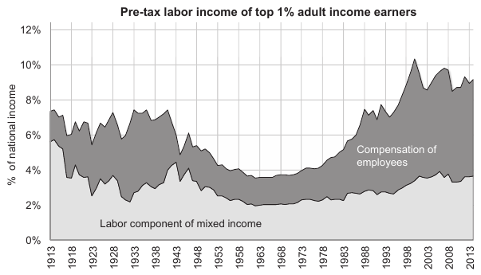
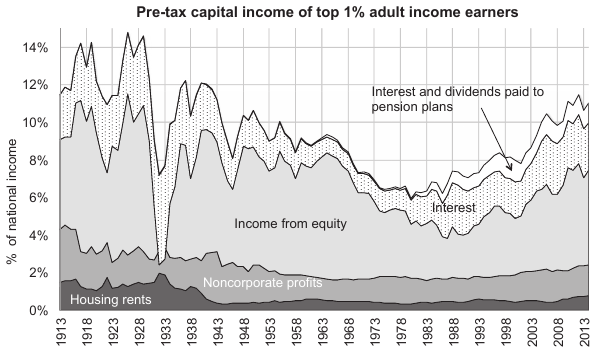
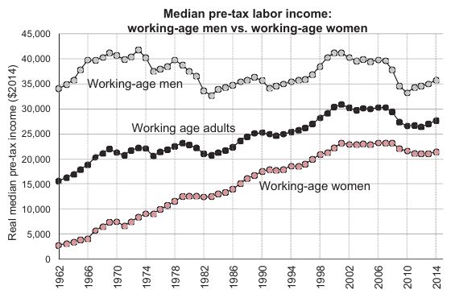